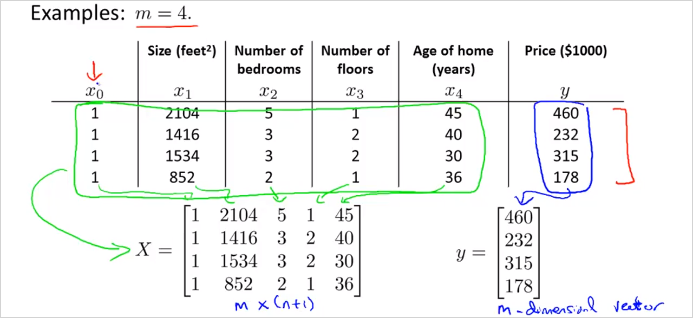
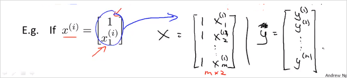

2.2. Computing Parameters Analytically
2.2.1. Normal Equation
Normal Equation은 최적의 를 구할 수 있는 또다른 방법이다. gradient descent 와는 다른 방식으로 각각 장/단점이 있다. Normal Equation은 를 반복계산 없이 공식하나로 한번에 구할 수 있다. 다음의 training set을 보자.

4개의 feature가 있고 결과가 있다. 이것을 각각 X matrix와 y 벡터로 복사한다. 계산의 편의를 위해 1을 갖는 열이 추가되었음에 유의. 이것을가지도 아래 Normal Equation 공식에 대입해 계산하면 바로 를 구할 수 있다!
이렇게 계산된 는 cost function J를 최소화하는 값이다.

만약 번째 하나의 training data가 위의 처럼 n + 1 크기의 벡터로 주어진다면, 이것으로 우측과 같이 Design Matrix X를 만든다. (결국 이전 예시처럼 테이블을 그대로 matrix에 복사한것과 동일한 구성임)
더 간단한 예를들면 아래와 같다.

를 구하는 Octave 명령어
pinv(X'*X)*X'*y
반복 계산도 필요없고 적절한 를 찾아야하는 수고가 없다. 또한 Feature scaling도 필요없다. 이렇게 좋은 방법이 있다니? 그러나 결론적으로Normal Equation에 매우 치명적인 단점이 있다. n(feature갯수)가 엄청 커지면 Normal Equation은 못쓴다. 복잡도가 으로 연산속도가 엄청나게 느려지기 때문이다.
Gradient descent 와 Normal equation을 비교하면 아래와 같다.
보통 n=10000 정도까지는 Normal equations을 사용해도 괜찮다고 한다. 현대 컴퓨팅 파워로 이정도계산 까지는 실용적인 속도를 얻을 수 있다.
2.2.2. Normal Equation Noninvertibility
역행렬이 없는 Normal Equation은 어떻게 구해야할까?
가 역행렬이 없는 경우가 있기 때문이다.
다음의 두가지 경우에 에 역행렬이 없다.
1번은 각 feature가 처럼 선형적으로 종속적인 관계일때이다. 이럴땐 둘 중 한feature를 제거해도 된다.
두번째는 피쳐갯수(n)이 training set갯수(m)보다 많을때이다. 이럴땐 어떤 feature들을 지우거나, regularization기법을 사용한다.